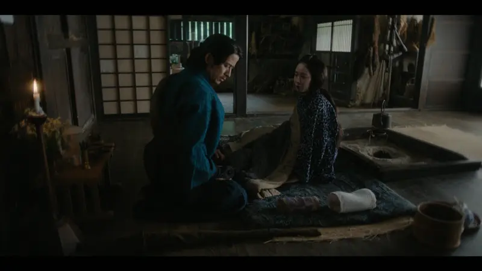
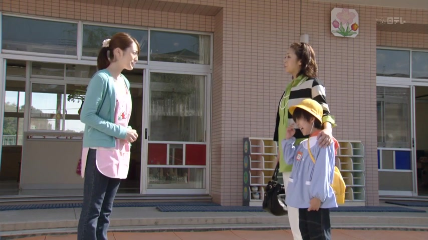
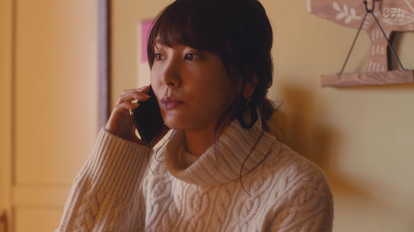
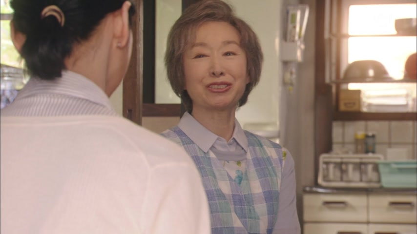

～つもりだ
| Polite | ～つもりです |
|---|---|
| Casual | ～つもりだ plain statement ～つもり just the word, very common |
Same meaning: "plan to". Only the politeness changes.

Last Samurai Standing · Episode 1
また、刀を抜くおつもりですか？
"Are you planning to draw your sword again?"
つもり means plan to, intend to: something you've already decided to do.
It goes right after the dictionary form: 抜く + つもり. On this card, it answers "what have you made up your mind to do?": draw the sword.
Add です to make it polite. Here it's asked about someone else, so お is added on top: おつもりですか.
Shirokuma Cafe · Episode 14
ペン子さんにアタックするつもりで
"With the plan of making a move on Penko-san..."
Casual: つもり on its own, or つもりだ. Here it's つもりで, "with that plan in mind", and the sentence carries on.
Examples
A friend asks what you're doing this weekend. You've already booked the tickets.
土曜日に映画を見るつもり。
"I'm planning to see a movie on Saturday."
見る + つもり. Already decided, not just a wish.
CasualYour boss asks about your plans after the contract ends.
来年、日本に引っ越すつもりです。
"I'm planning to move to Japan next year."
引っ越す + つもり + です.
PoliteYour friend thinks you'll go to the party. You won't.
今日は行かないつもり。
"I'm not planning to go today."
For "plan not to", put the verb in ない form: 行かない + つもり.
CasualA coworker sees you packing up early.
今日は早く帰るつもりです。
"I'm planning to go home early today."
帰る + つもり + です.
PoliteWith and without
京都に行きたいです。
"I want to go to Kyoto." Just a wish, maybe one day.
京都に行くつもりです。
"I'm planning to go to Kyoto." You've decided.
Sentence mining
Source unknown No source
昼ご飯に、豚カツを食べるつもりです。
"I'm planning to have tonkatsu for lunch."
Dictionary form + つもりです.
I'm Taking the Day Off · Episode 9
就職したら そのつもりです。
"That's my plan once I get a job."
そのつもりです: that's what I intend.
I'm Taking the Day Off · Episode 8
お断りするつもり。
"I'm going to turn it down."
Dictionary form + つもり: I plan to.

I am Mita, Your Housekeeper · Episode 1
どう責任取るつもりですか？
"How do you plan to take responsibility?"
どう...つもりですか: how do you plan to ...?

Weakest Beast · Episode 10
来ないつもり？
"You're not planning to come?"
Negative + つもり: plan not to.

Overprotected Kahoko · Episode 8
そんなつもりじゃなかったのよ。
"That's not what I meant."
そんなつもりじゃなかった: I didn't mean it that way.